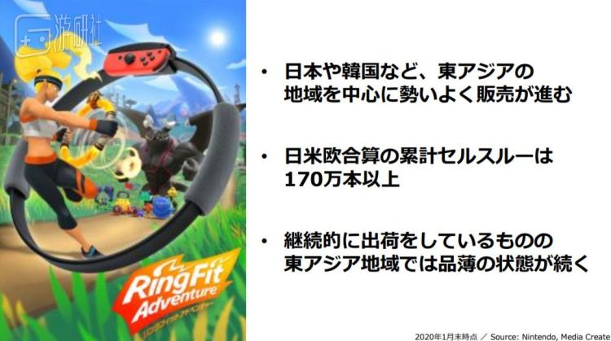
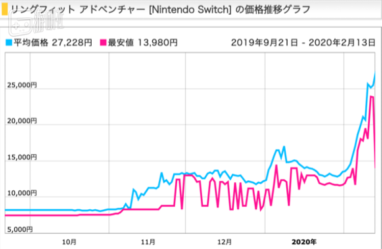

价格飙涨至发售价3倍，健身环大冒险火了！健身游戏的春天真的来了吗？
原文链接 备份链接 文/胡月 从2019年年底开始，一款名为《健身环大冒险》的Switch游戏在社交网站上迅速走红。在这款主打健身功能的游戏中，你需要通过做出相应的健身动作释放技能，一路打怪升级，推进剧情。 将枯燥的健身运动游戏化，或许正 …
在可预见的未来，中国的游戏市场将一直扮演这个巨大而隐秘的变量。
在过去的两个月里，《健身环大冒险》已经成为最完美的理财产品了。
如果你在去年刚发售时原价购入，现在可以用接近三倍的价格再卖给别人。这还是近几天价格回落之后的情况：二月下旬，疫情还没有迎来拐点，快递也没有完全恢复运力的时候，《健身环大冒险》的价格一度达到了1800元以上，价格比原价的三倍还高。

每年都有这么多游戏发售，可这么长时间过去不仅没打折还升了值的，好像也只此一家。
我和很多人的感觉一样，健身环刚出的那阵子觉得“有点小贵，等过段时间降价收二手”，然后就错愕地看着它越涨越高。
接下来，除了安慰自己“这是虚高，产能一上来肯定马上降”之外，我也只能对着因为过年和疫情迅速起飞的价格望洋兴叹：早知如此，我肯定先买它个百八千份囤着！
有的人还在感叹，但有的人已经开始行动了。国内游戏自媒体的老朋友，对东亚游戏界一直很关注（但消息经常不太靠谱）的分析师“诸葛亮”Daniel，在之前就发了条推特，说中国的商家正在全球扫荡《健身环大冒险》的库存，就为了在国内卖出高价，有图有真相。
与此同时，许多媒体的目光也集中到了国内的这场“健身环淘金热”中。比如《南华早报》旗下的Abacus News前两天还刊载了一篇报道，说“甚至仿制的健身环都在中国缺货了”。
在这种情况下，也难免有人把《健身环大冒险》在世界各地的缺货现象和中国买家联系起来了。在一些外媒的报道里，干脆直接把中国的商家称为“scalper”（黄牛党的意思），认为全球到处扫货的他们也算是造成缺货的原因之一。
那么，问题来了——《健身环大冒险》变得这么贵，和中国有什么关系？
简单来说，一件商品要涨价，最主要的原因无非两种：想买的人多，能卖的货少。健身环在中国，不仅把这两个原因占全了，还持续了几个月的时间。
先说前者，想买《健身环大冒险》的人，到底多到什么程度了呢？
我们可以从任天堂1月底发布的财报里见到点端倪：仅仅去年10到12月，日美欧三个主要市场就卖出了170万份以上，东亚市场最给面子，甚至到了“尽管一直出货，但短缺还是存在”的程度。
我们也都知道，在健身环还未正式引进的情况下，大陆肉眼可见的热度带来的这些销量，大部分都是要被算到港台地区或者日本、韩国的数据里去的。

这样高涨的需求，来自健身环的定位。
在Switch两年多的生涯中，有过不少人气高到出圈，成功吸引原本不是玩家群体的用户买单的游戏。而健身环的出圈方式，也是早就被验证过的——2018年底发售的《健身拳击》，就曾经掀起过一阵“打拳热潮”。
相比之下，设计更友善，互动感更强，其实就是把这条路再走了一遍。无论是从微博，很多人都是用它带原本不玩游戏的家人和朋友们入了坑。
疫情带来的影响，也进一步激发了我们的购买欲。过年加防疫，被动宅在家里的日子，体重增加的恐惧总是如影随形，你会因为什么去买健身卡，就也会为了同样的理由把钱掏给健身环。

微博、抖音甚至Keep等社交平台上，人们纷纷加入了健身环的安利大军。
然而，在这样高企的人气下，《健身环大冒险》的供货量却从来没有充足过，这也打破了玩家们“早买早享受，晚买享折扣”的惯性，让它奔着“理财产品”的道路一去不复返。
在年前，缺货的主要原因十分简单：就是产能没跟上。任天堂起初对健身环的销量预估比较保守，这使得初期的备货量就不够充足，再加上健身环本身需要特殊配件的支持，这让它很难迅速提升产量。为此，任天堂还在游戏发售一个多月之后发表了致歉公告，说到年底前都会加大出货量。
可接下来，春节和新冠疫情叠在一起，就变成了一套缺货组合拳。过年的各种元素，不管是放假休闲还是阖家团圆，都既是买健身环的理由，也是生产能力下降的原因；而随后疫情带来的隔离，更是把国内的相关产能降到了谷底。

能搞到的货源越来越少，想买的人却越来越多，于是国内的商家们也只能八仙过海，各显其能。但本质上，这也不过是去搬空其他国家和地区的货架——毕竟《健身环大冒险》还没正式引进呢。
一位对游戏零售电商比较了解的朋友告诉我，现在电商平台上的店铺，进货主要有两种来源：第一种是向负责从香港或日本等地进口的经销商进货，这也是主要的来源；第二种则是自己在各个地区的亚马逊等电商网站，甚至是国内的闲鱼等平台零散收货，再转手卖出。
经销商能提供的货源越来越有限，商家们就只能加大自己搜货的力度。就这样，大家拉上了全世界人民陪我们一起缺货——先是海淘常见的地区被一扫而空，然后随着需求越来越大，就连一些冷门市场也成为了目标。一位在荷兰留学的同学向我表示，二月中旬的时候还能在当地的亚马逊上买到原价的《健身环大冒险》，一个星期之后就也进入要么缺货要么高价的状态了。
我还拜托在日本的朋友去问了一下Bic Camera（日本最大的家电零售企业之一）的店员，得到的答复也有一些参考价值：实体店常年脱销，但每个月会不定时地补货，至于更容易被国内商家扫荡的网络平台，则基本不会有补货了。
 日本各大电商平台，健身环的价格也在同步上涨
那么，回到前面的那个问题：《健身环大冒险》变得这么贵，和中国人到底有什么关系？
你既可以得出一个很简单的答案，也可以发现一个更复杂的版本。
简单点说，你我这些中国消费者想买它，可在中国的工厂又生产不出足够的数量，越来越供不应求，当然就贵了。而在这背后，是大陆这个暂时还没法被精确计量的庞大市场，是比玩家还要热情百倍，翻遍全球寻找货源的商家，也是新冠疫情这个特殊时期带来的商业奇观。
我不知道未来再有游戏卖到三倍的价格会是什么时候，但我总觉得，下一次，可能还是会和中国有关。
因为这是一块如此巨大的市场，而这块市场又无法被正式地统计。对于扎根在国外的主机游戏产业来说，在可预见的未来，中国的游戏市场将一直扮演这个巨大而隐秘的变量，直到中国主机用户的需求被正视的那一天。
原文链接 备份链接 文/胡月 从2019年年底开始，一款名为《健身环大冒险》的Switch游戏在社交网站上迅速走红。在这款主打健身功能的游戏中，你需要通过做出相应的健身动作释放技能，一路打怪升级，推进剧情。 将枯燥的健身运动游戏化，或许正 …
原文链接 备份链接 图片来源：视觉中国 记者：林北辰 编辑：文姝琪 “ 即使在网上买到了口罩，你也不一定能够用上——延迟发货是最普遍的情况；发货了，订单还要面临虚假发货、商品是三无产品的风险。 ” “你能买到口罩吗？” 这是疫情中所有人最 …
原文链接 备份链接 牵一发而动全身。 这周，热门动画《恋爱中的小行星》第七话将推迟一周播出。原定的播出时间将改为放送总集篇。 总集篇是一个剪辑已经播出的动画片段，是一个只有在最紧急的时刻才会使用的凑数手段。很显然，这部动画的制作遇到了 …
原文链接 备份链接 《创新经济战疫计划》，是燃财经在新型肺炎疫情期间推出的特别栏目，关注创新经济企业遇到的新难题、商讨应该采取的新对策，希望能够帮助中小企业一起战胜挑战、把握机会。 作者 | 苏琦 编辑 | 魏佳 新冠疫情爆发以来，和“ …
原文链接 备份链接 随着多国新冠肺炎感染者数量持续攀升，全球战疫进入关键时刻，“全球一盘棋、各国共进退”日益成为国际共识。 “积极开展抗疫国际合作”“维护地区和全球公共卫生安全”，这是一个多月来，中国最高领导人习近平在带领中国全力战疫 …